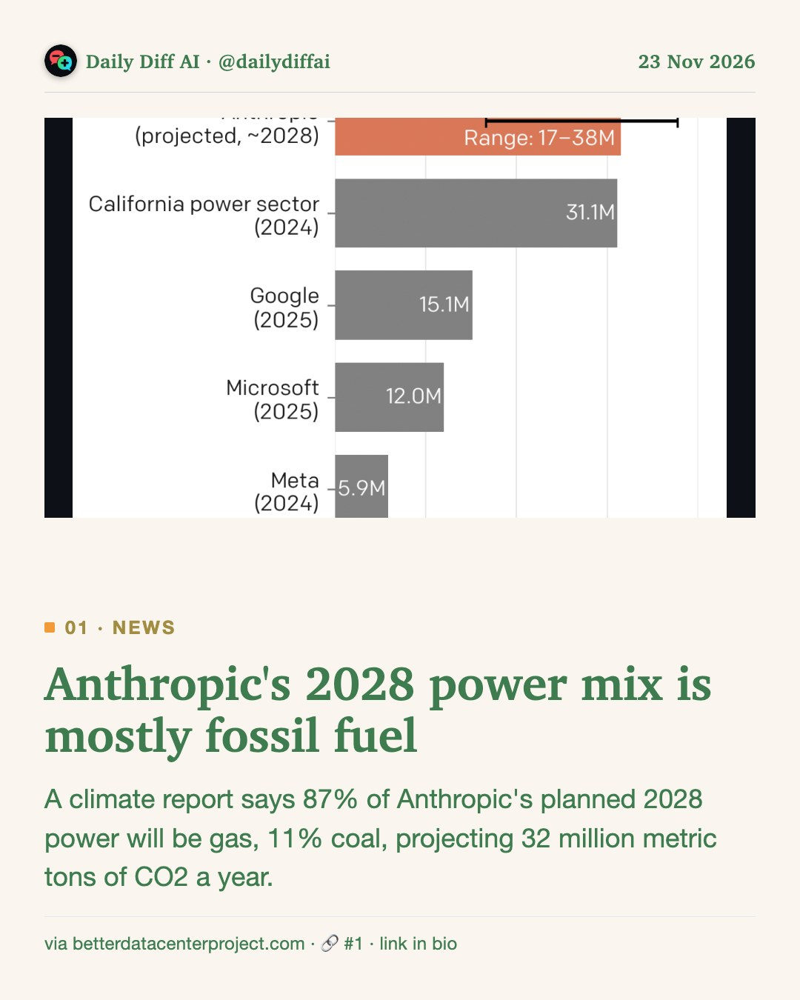
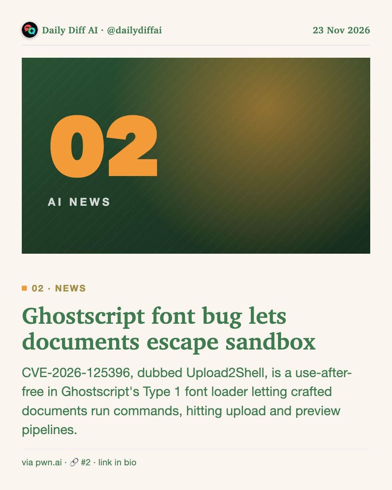
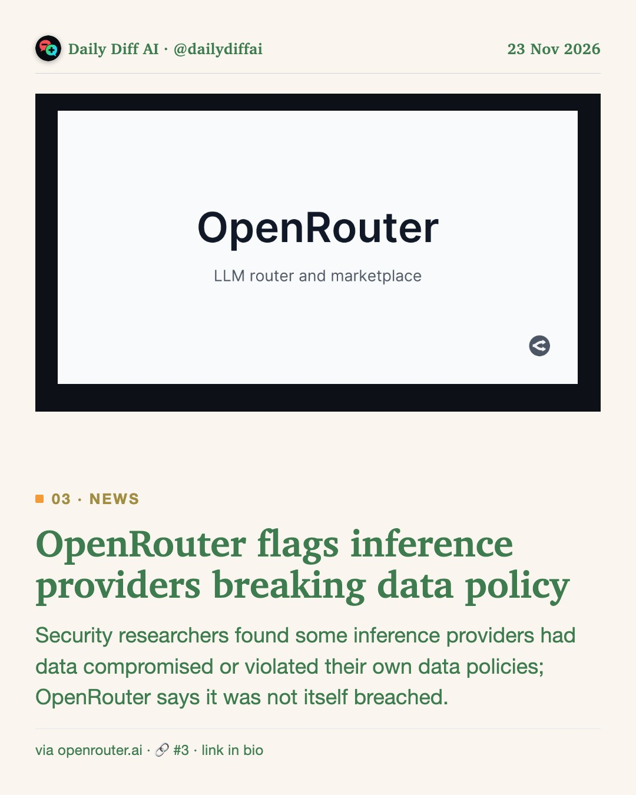
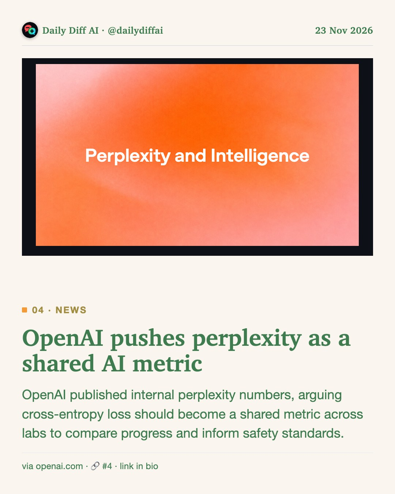
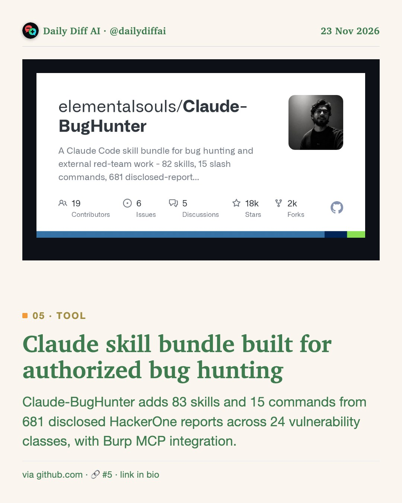
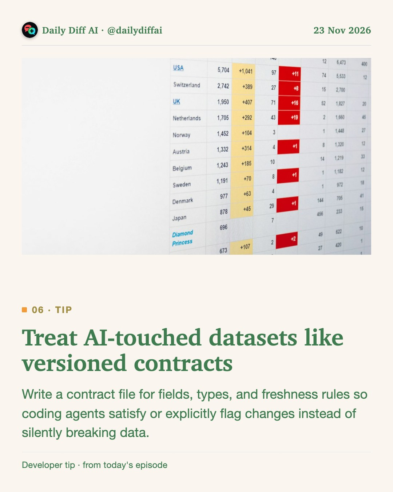

Daily Diff AI

Anthropic's 2028 power mix is mostly fossil fuel
A climate report says 87% of Anthropic's planned 2028 power will be gas, 11% coal, projecting 32 million metric tons of CO2 a year.
Read on betterdatacenterproject.com →
Ghostscript font bug lets documents escape sandbox
CVE-2026-125396, dubbed Upload2Shell, is a use-after-free in Ghostscript's Type 1 font loader letting crafted documents run commands, hitting upload and preview pipelines.
Read on pwn.ai →
OpenRouter flags inference providers breaking data policy
Security researchers found some inference providers had data compromised or violated their own data policies; OpenRouter says it was not itself breached.
Read on openrouter.ai →
OpenAI pushes perplexity as a shared AI metric
OpenAI published internal perplexity numbers, arguing cross-entropy loss should become a shared metric across labs to compare progress and inform safety standards.
Read on openai.com →
Claude skill bundle built for authorized bug hunting
Claude-BugHunter adds 83 skills and 15 commands from 681 disclosed HackerOne reports across 24 vulnerability classes, with Burp MCP integration.
Read on github.com →
Treat AI-touched datasets like versioned contracts
Write a contract file for fields, types, and freshness rules so coding agents satisfy or explicitly flag changes instead of silently breaking data.